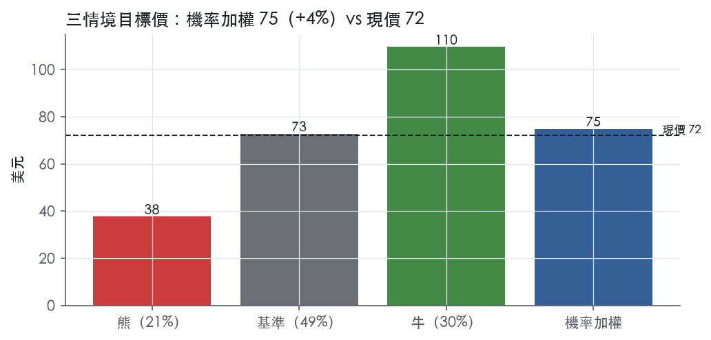
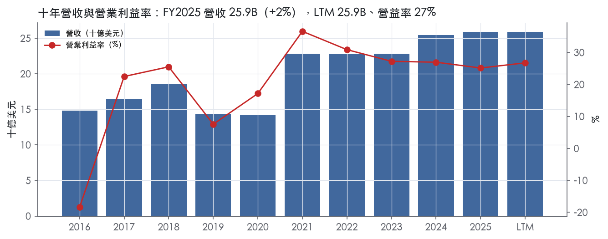
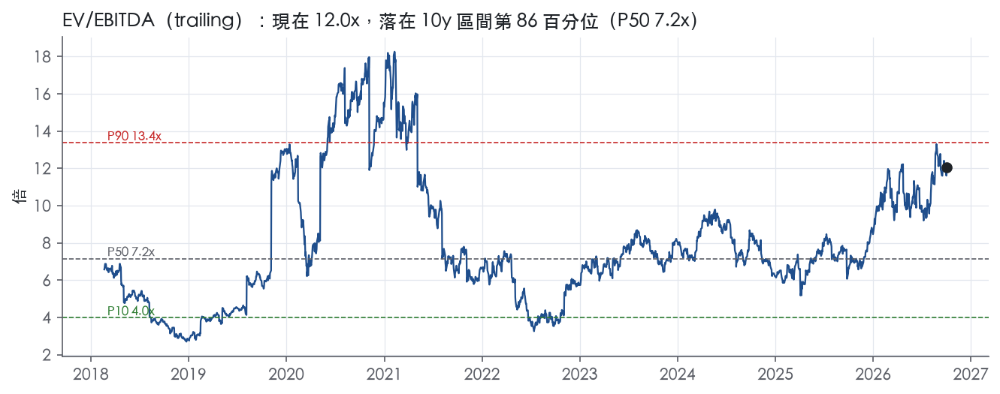
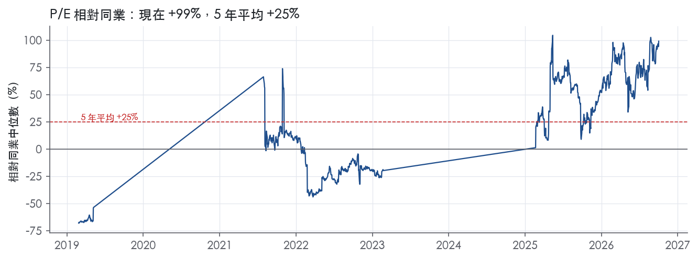
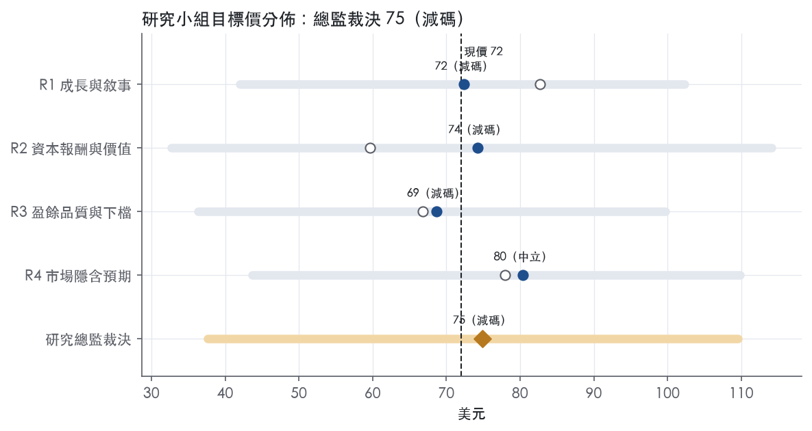
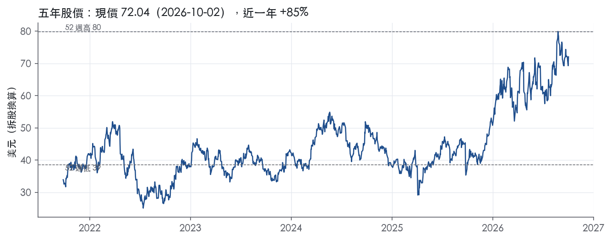

評等總表 › 原物料 › FCX
復產與六美元銅價已入價，中性｜評等 減碼｜目標價 75
| 評等 | 減碼（邊界，鄰近中立） |
| 12 個月目標價 | 75 美元 |
| 現價 | 72.04 美元（2026-10-02） |
| 預期報酬 | 股價 +3.9%＋股息 0.8%＝總報酬 +4.7%；同業籃門檻 10.2%，超額 -5.5% |
| 估值方法 | EV/EBITDA 8.5x，套在三年平均的EBITDA |
| 三情境 | 熊 38／基準 73／牛 110 |
| 研究流程 | 四位研究員兩輪辯論＋研究總監裁決 |
| 資料來源 | SEC EDGAR XBRL、Tiingo、FRED（全免費） |
復產與六美元銅價已入價，中性（研究總監裁決，四位研究員兩輪辯論後）
評等 減碼（邊界，鄰近中立）｜12 個月目標價 75 美元（總監三情境機率加權 76 與研究員中位數 73 各半）｜現價 72.04（2026-10-02）
預期報酬：股價 +3.9%＋股息 0.8%＝總報酬 +4.7%。同業籃門檻 10.2%，超額 -5.5%，離中立的分界不到三個百分點，屬邊界評等（落在其他級距的機率約五成）。
估值方法：EV/EBITDA 8.5x，套在三年平均的EBITDA。三情境：熊 38（21%）／基準 73（49%）／牛 110（30%）。
立場中性而評等減碼：評等看的是「預期總報酬 4.7% − 同業籃門檻 10.2%」＝超額 -5.5%，不是絕對漲跌；中性但超額偏離門檻，代表情境機率或股利把報酬推離門檻。
什麼會讓研究總監改變看法：2027 年指引以 ≥$6.00 銅價規劃且單位淨現金成本指引降至 $1.70 以下，Y2–Y3 回落假設失效，轉看多；Q3 8-K 印尼產量落後「下半年約 85% 產能」或全年指引下修至 3.0B 磅以下，轉看空。
| 過去四季（實際，FY2026Q2） | 未來四季 | 第 5–8 季 | 第 9–12 季 | |
|---|---|---|---|---|
| 營收（B） | 25.9B | 30.5B | 32.4B | 33.0B |
| 營收成長 | 0.2% | 18.0% | 6.0% | 2.0% |
| 營業利益率 | 26.8% | 32.0% | 32.0% | 29.0% |
| EPS（美元） | 2.14 | 4.74 | 5.02 | 4.64 |
| EPS 成長 | 31.5% | 121.3% | 6.0% | -7.6% |
| 每股股息（美元） | 0.60 | 0.60 | 0.60 | 0.60 |
| P/E（現價） | 33.6x | 15.2x | 14.3x | 15.5x |
| 股息殖利率（現價） | 0.8% | 0.8% | 0.8% | 0.8% |
過去四季為申報數字；預測為研究總監的假設、程式計算。倍數與殖利率都用現價計算，用來看現價對應各期獲利的高低。
| 情境 | 機率（歷史） | 故事 | 未來四季營收成長 | 第 5–8 季營益率 | 倍數 | 目標價 | 股價漲跌 |
|---|---|---|---|---|---|---|---|
| 熊 | 21%（16%） | 風險表第 1 條 Block 1 再延、第 2 條銅價回落至 2025 年 LME 均價 $4.51 一帶並觸發暫定計價反沖、第 3 條倍數自 98.2 分位回到 10y P50 7.2x | 3.0% | 22.0% | 7.2x | 38 | -47.8% |
| 基準 | 49%（52%） | H2'26 銅 $6.00、H1'27 $5.50、Y2 $5.25、Y3 $5.00（假設），NTM 34 億磅、Grasberg 兩年內滿產，倍數 8.5x mid_cycle | 18.0% | 32.0% | 8.5x | 73 | 0.9% |
| 牛 | 30%（31%） | 銅 ≥$6.50（假設）、Block 1 於 2027 年初前復產、2027 指引 ≥36 億磅、Bagdad 核准、關稅升水延續，倍數停在 1y P50 10.0x | 28.0% | 37.0% | 10.0x | 110 | 52.1% |
目標價由程式依研究總監的驅動與倍數計算；機率由研究總監給定。括號內是歷史頻率：把這檔股票過去十年 12 個月報酬的波動形狀，置中在基準情境，結果落在各情境附近的比例。

四位研究員用不同方法各自估值，回應研究總監的質疑後交出第二輪，最後由總監逐點裁決。各研究員的主張見第七章，裁決理由見第八章，完整論證見《研究底稿》。
| 立場（一輪→二輪） | 加權目標價（一輪→二輪） | 評等（一輪→二輪） | 第二輪倍數 | 熊～牛目標價 | |
|---|---|---|---|---|---|
| R1 成長與敘事 | 看多→中性 | 83→72 | 加碼→減碼 | 9.0x | 42～102 |
| R2 資本報酬與價值 | 看空→看空 | 60→74 | 賣出→減碼 | 8.5x | 33～114 |
| R3 盈餘品質與下檔 | 看空→看空 | 67→69 | 賣出→減碼 | 8.0x | 36～100 |
| R4 市場隱含預期 | 中性→中性 | 78→80 | 中立→中立 | 8.5x | 44～110 |
| 研究總監裁決 | 中性 | 75 | 減碼 | 8.5x | 38～110 |
目標價由程式依各自的驅動與倍數計算；評等＝機率加權總報酬 − 同業籃門檻。
FCX 是一家以銅為核心的國際金屬公司，目標是成為全球銅業龍頭，總部位於美國亞利桑那州鳳凰城，資產組合涵蓋印尼 Grasberg 礦區、美國 Morenci 礦區與秘魯 Cerro Verde 礦場¹。公司是全球最大的上市銅生產商之一，依 Wood Mackenzie 2025 年 12 月估計，FCX 以淨股權口徑排名全球第三大銅生產商，約占全球礦產銅產量 5%¹。2025 年合併營收組成為銅 75%、金 15%、鉬 8%¹。LTM（至 FY2026Q2）營收規模為 25.87B 美元。公司本質上是一家順週期、美元計價的大宗商品出口商，客戶是全球煉銅、電線電纜、鋼鐵合金與工業用戶，收入高度繫於 LME／COMEX 銅價與公司自身礦山的開採進度。
FCX 依地理區分三大營運群：美國、南美與印尼，彼此規模相近但毛利結構差異大。美國管理七座銅礦（Morenci、Bagdad、Safford／Lone Star、Sierrita、Miami、Chino、Tyrone）與兩座鉬礦（Henderson、Climax），並擁有 Miami 銅熔煉廠與 El Paso 精煉廠／線材廠¹；南美管理秘魯 Cerro Verde 與智利 El Abra 兩座銅礦¹；印尼則由 PTFI 於 Grasberg 礦區營運，並已在 2025 年完成熔煉廠與貴金屬精煉廠（PMR），成為完全整合的精銅與精金生產商¹。2025 年銅礦藏按地區分布：美國 38%、南美 40%、印尼 22%；2025 年銅產量分布：美國 39%、南美 31%、印尼 30%¹。Morenci、Cerro Verde 與 Grasberg 三座礦合計占 2025 年合併銅產量 70%¹。公司是世界最大的鉬與鉬化學品生產商¹。產品形式上，2025 年開採銅有 43% 以精礦售出、33% 為陰極銅、24% 製成銅桿¹；金幾乎全數來自 Grasberg¹。年度財務上，FY2025 營收 25.91B、EBITDA 8.76B、毛利率 28.2%，較 FY2021 高峰（毛利率 38.6%）明顯壓縮，主因印尼事故與成本上升。10-K 未就各地理分部單獨揭露營收與營業利益金額，僅以產量占比呈現規模。
客戶集中度低，近三年僅 2024 年度有單一客戶（PTFI 合資夥伴 Mitsubishi Materials Corporation，透過持股 66% 的 PT Smelting 合資煉銅廠）占合併營收 10% 以上¹。美國銅礦產出大部分在自家軋延廠加工成銅桿後賣給線纜製造商，其餘以陰極銅或精礦形式依美元計價年度合約出售，定價以 COMEX 月均結算價加計升水¹；2025 年美國礦場銅產出 66% 為桿材、25% 為陰極銅、9% 為精礦¹。南美產出以美元計價年度及多年合約銷售，2025 年 75% 以精礦、25% 以陰極銅售出，定價主要依出貨後一至四個月 LME 月均價¹。印尼方面，2025 年 PTFI 51% 以精礦、49% 以陰極銅售出；隨下游設施完工，未來將全數以長約陰極銅形式銷售（印尼內銷以盧比計價、出口以美元計價）¹。公司自稱是美國最大煉銅供應商，透過整合礦山與加工設施提供美國約 70% 精煉銅產量，且多數內銷¹。通路本質是長約定價加交易所指標，公司幾乎是價格接受者，真正的差異化在成本結構與礦藏品位而非客戶議價力。
FY2025Q3（期至 2025-09-30）營收 6.97B、年增 2.7%、毛利率 30.7%、EBITDA 2.60B、淨利 1.25B、EPS 0.46（is/dv 各期末資料，見 FY2025Q3 列）。FY2025Q4（期至 2025-12-31，Q4 由年度倒推）營收 5.63B、年減 1.5%，毛利率驟降至 18.1%、營益率僅 14.4%、淨利 0.56B、EPS 0.39，反映 9 月 Grasberg 外部泥流事故重創印尼產量。FY2026Q1（期至 2026-03-31）淨利歸屬普通股股東 881M 美元，每股 0.61 美元，調整後淨利 830M 美元、每股 0.57 美元²，公司當季啟動 Grasberg Block Cave 地下礦分階段復產，並與印尼政府簽署延長 PTFI 礦區營運權年限的備忘錄²；全年銅銷售指引下修至約 3.1B 磅、金 650M 盎司，第二季指引銅 690M 磅²。FY2026Q2（期至 2026-06-30）淨利歸屬普通股股東 984M 美元、每股 0.68 美元，調整後淨利 1.1B 美元、每股 0.74 美元³；公司表示 Grasberg Block Cave 復產進度符合預期，美洲操作表現優於去年同期³；全年銷售指引維持銅 3.1B 磅、金 650M 盎司、鉬 93M 磅，第三季指引銅 750M 磅、金 160M 盎司、鉬 22M 磅³；全年單位淨現金成本指引為每磅 1.90 美元³。四季合計呈現「谷底在 FY2025Q4、復甦在 FY2026Q1–Q2」的型態，EPS 已從 0.39 美元回升到 0.68 美元，但 FY2026Q2 營收年減 7.3% 顯示去年同期（Grasberg 事故前）的高基期效應仍未完全填平。
公司表示看好銅的長期需求基本面，成長動能來自電氣化、開發中國家都市化、資料中心與 AI 發展、國防支出增加及全球連結性提升¹。在美國與南美操作中，公司將新應用、新技術與數據分析導入浸出製程，2025 年底已達到約 240M 磅銅的年化增產率，目標在 2026 年達到 300M 磅銅年產量，並相信超越此目標仍有進一步顯著增產空間¹。Bagdad 礦場已規劃將選礦廠產能擴增逾一倍，可望增加年產銅 200 至 250M 磅，預估增量資本支出約 3.5B 美元，公司已完成技術與經濟研究，預計在 2026 年就是否投資做出決策¹。公司持續推進 Safford／Lone Star 礦區的預可行性研究以評估大型擴產機會¹，並在智利 El Abra 遞交潛在重大擴建案的環境影響說明書²。公司並強調與印尼政府達成的 PTFI 營運權延長備忘錄，有助於鞏固 Grasberg 礦區的長期資源開發基礎²。整體而言，FCX 的成長故事建立在三根柱子：既有礦山的浸出技術增產（近線、低資本密度）、美國/智利的大型棕地擴建（中期、高資本密度）、以及印尼 Grasberg 復產與下游整合的量體回補。短期股價已部分反映復甦（P/E 33.6x 已處於近五年 90.5 分位，EV/EBITDA 12.0x 處於 98.2 分位），市場顯然在為 Grasberg 完全復產與棕地擴建的未來現金流提前定價。對於投資人而言，真正的觀察重點不是「銅多頭故事是否成立」，而是 Grasberg 爬坡速度與 Bagdad／El Abra 資本支出決策時點能否如期兌現。

FCX 的護城河評為「窄」。護城河來自礦體的規模與品位帶來的成本位置，以及取得難度極高的採礦特許權，而不是對銅價的議價力。公司是價格接受者，銅價由 LME、COMEX 與上海期貨交易所決定，價格「can be volatile and cyclical」¹。因此這道護城河只保護「週期平均報酬高於資本成本」，無法保護「每一年都高於資本成本」。趨勢判為變窄，原因是 FY2021 以來 ROIC 連續下滑，同時印尼營運權與事故風險上升。
成本優勢是主要來源。公司自述競爭地位「is based on the size, quality and grade of our ore bodies and our ability to manage costs compared with other producers」¹。Grasberg 是「one of the world's largest copper and gold deposits」¹。2025 年金占合併營收 15%，且金幾乎全部來自 Grasberg¹。這筆副產品收入能壓低銅的淨單位成本，是一般純銅礦複製不了的結構性優勢。在美洲，浸出技術在 2025 年底已達約 240M 磅的年化增產，2026 年目標為 300M 磅¹。Bagdad 已完成美國首座全自動化運輸車隊改造¹。這兩項都屬於低資本密度的成本改善。
無形資產（授權）是第二來源。公司的採礦活動依地主國政府授予的特許權或合約進行¹，且必須取得監管許可才能「start, continue and expand operations」¹。Morenci 自 1939 年起持續營運¹，Bagdad 的礦藏年限超過 80 年¹。在新礦許可越來越難取得的環境下，既有長壽礦權本身就是進入障礙。
效率規模只適用於美國市場。公司透過整合的國內採礦與加工設施，提供美國約 70% 的精煉銅產量¹。美國銅桿產量在過去三年每年約 1B 磅¹。這個市場容不下第二個同等規模的整合供應商。
數字支持「窄」，不支持「寬」。
支持的一面：
衝突的一面：
維持「窄」而不下修為「無」的理由有兩點。第一，兩個低於資本成本的年度都落在銅價週期谷底，之後 ROIC 迅速回到資本成本之上。第二，以週期平均計算的利差仍明顯為正。不給「寬」的理由是，10 年期間至少會經歷一到兩次完整週期，我們沒有把握谷底年度的報酬守得住。
印尼營運權是最大風險。特許權「are subject to the political risks associated with the host countries」¹。PTFI 的出口許可已於 2025 年 9 月 16 日到期¹。現行礦場關閉計畫只反映到 2041 年的生產¹。2025 年 9 月的泥流事故則證明 Grasberg 的集中度也是單點風險，因為 Morenci、Cerro Verde 與 Grasberg 合計占 2025 年合併銅產量 70%¹。
成本端有三項壓力：
此外，大型棕地擴建所需的資本支出也會拉低邊際報酬，例如 Bagdad 的增量資本支出約 3.5B 美元，所需誘因銅價約每磅 $4.00¹。
目標倍數相對同業應「持平」，不給溢價。成本與礦權優勢只能保證週期平均報酬高於資本成本，無法降低獲利波動，所以不構成溢價理由。目前 EV/EBITDA 為 12.0x，處於近五年 98.2 分位，建議估值研究員把同業倍數套在週期中段獲利上，而不是 LTM 獲利，並對印尼營運權風險另行折價。
| 指標 | 最新 | 十年平均 | 標準差 | 最低 | 最高 |
|---|---|---|---|---|---|
| ROIC | 18.0% | 19.3% | 9.1% | 4.2% | 37.1% |
| 毛利率 | 28.2% | 22.5% | 15.7% | -18.2% | 38.6% |
| 營業利益率 | 25.2% | 20.1% | 14.8% | -18.4% | 36.6% |
| FCF 利潤率 | 4.3% | 8.3% | 8.6% | -8.1% | 24.5% |
| ROE | 22.8% | 24.0% | 12.8% | -2.0% | 44.4% |
程式計算。資本成本代理值（10 年債＋5%）：10.2%；ROIC 平均減資本成本：9.1%；ROIC 有資料的 9 年中，高於資本成本 7 年。
FCX 的營業現金流／淨利 LTM 1.41x、近三年 1.46x，應計比率 LTM -2.9%，均為綠燈，顯示會計盈餘有實際現金支撐，沒有靠應計項目堆出來的盈餘。但自由現金流／淨利 LTM 僅 0.41x、近三年 0.31x，遠低於 0.90x 的綠燈門檻，且與十年平均 1.17x 明顯背離。這個缺口來自資本支出而非營運現金品質惡化——FY2025 資本支出／營收達 17.3%，FY2023 更到 21.1%，且公司規劃 2026 資本支出約 4.3B，其中 3.0B 為主要礦山專案³。評級定為中，因為有一個紅旗（應收帳款成長）無法在現有原文中完全驗證其性質。
跟上，但跟上的是「營業現金流」而不是「自由現金流」。LTM 營業現金流／淨利 1.41x、近三年平均 1.46x，十年平均僅 0.53x，代表近期現金轉換效率明顯優於歷史。自由現金流／淨利 LTM 0.41x、近三年 0.31x 為紅燈，FY2023 自由現金流僅 0.46B、FY2025 僅 1.12B，相對淨利 3.75B 與 4.15B 明顯偏低（資料包年度表）。Q2 2026 單季營業現金流 2,048M，扣除資本支出 1,104M 後仍有正向自由現金流³，顯示近期現金轉換在改善。公司明確說明營運現金流中扣除了營運資金與稅款支出 596M（Q2 2026）、457M（H1 2026）³，這部分是真實的現金使用，不是會計操作。
Q2 2026 GAAP 淨利 984M（每股 0.68 美元），調整後淨利 1.1B（每股 0.74 美元），差額主要是排除稅後淨費用 96M（每股 0.06 美元），主因是 PTFI 2025 年 9 月泥流事故相關的閒置設施與復原成本³。這項調整我認為大部分應視為真實成本：事故造成的閒置設施成本 Q2 達 284M、H1 達 690M（稅前），雖從單位現金成本中剔除，但實際上是公司當期要負擔的現金支出，不是純會計性質的一次性沖銷³。另外新聞稿揭露了「遞延利潤」與「暫定計價調整」兩項非 GAAP 口徑差異：Q2 2026 暫定計價調整對淨利貢獻 35M（每股 0.02 美元），公司間銷售遞延利潤變動影響淨利 -6M³。這兩項屬於銅價波動與存貨會計機制造成的雜訊，金額相對小，對盈餘品質的影響有限但方向會隨銅價走勢擺動，estimator 在模型化時應視為非經常性雜訊而非核心盈餘。
槓桿低、股東回饋穩健但非主導性。淨負債／EBITDA LTM 0.59x、近三年 0.58x，遠低於 1.50x 的綠燈門檻，十年平均 -8.95x 的異常值反映早年 FY2021 淨負債僅 1.38B、EBITDA 10.36B 的極端年份拉低比率，不代表結構性問題（資料包年度表）。6 月底總負債 9.386B、現金 4.08B，淨負債若排除 PTFI 下游加工設施的 3.2B 專案融資僅 2.1B³，顯示表觀槓桿已經因特定專案融資被拉高，但核心資產負債表仍健康。股利＋回購／淨利 LTM 25.6%、近三年 22.5%，屬黃燈但非紅燈，代表公司目前把多數現金流留在資本支出與擴產（Bagdad 擴產增量資本約 3.5B、El Abra 擴產評估）⁴，而非優先回饋股東，Q2 2026 回購股票僅 110M³，規模遠小於資本支出，稀釋股數年變動 -0.1% 顯示流通股數穩定甚至微幅下降。資產負債表另有 2.0B 環境義務與 3.8B 資產退休義務揭露在表內⁴，屬於長期尾部風險而非短期流動性問題。
自由現金流／淨利紅燈（LTM 0.41x，近三年 0.31x）：真問題但可解釋，不是盈餘品質造假——FCX 處於多個成長型資本支出週期（Grasberg Block Cave 復工、Bagdad／Safford／El Abra 擴產研究），2026 年計畫資本支出 4.3B 中 3.0B 為主要礦山專案³，這是選擇性的成長投資而非維持性支出被低估。對估值而言代表目前的 GAAP 淨利無法完全轉換為可分配現金，應打折看待。
應收帳款成長比營收快 67 個百分點（FY2025）紅燈：無法在提供的原文中找到直接解釋，屬於未解釋的真紅旗。FY2025 營收僅成長 1.8%（資料包年度表），但同期銅年底收盤價 5.67 美元／磅遠高於全年均價 4.51 美元／磅⁴，加上南美與印尼銷售合約普遍採「暫定計價、1-4 個月後結算」機制⁴，年底價格急漲可能使應收帳款的暫定計價金額膨脹，但原文沒有直接數字佐證這個解釋，必須列為待驗證項目。
淨利率三次大幅跳動（FY2016→17、FY2018→19、FY2020→21）：屬於會計口徑/商品週期造成的假警報而非盈餘操縱，但本次拿到的 10-K Item 7 節錄是公司業務介紹（Item 1/2），並非真正的 MD&A 結果分析段落，因此無法在原文中找到直接文字佐證這三次跳動的具體原因。以銅礦公司的商業模式推論，淨利率對銅價高度敏感（LME 均價、COMEX 均價逐年劇烈波動），這類跳動在資源業屬常態而非盈餘品質問題，但本報告基於現有材料無法逐條佐證，列為待補充項。
利息保障倍數無數據：量化底稿顯示「—」，無法評估付息能力燈號，但淨負債／EBITDA 僅 0.59x 且 IG 級別利差環境（ig_oas 0.86）寬裕，槓桿本身不構成壓力。
估值應以 GAAP 淨利為主、用調整後數字做輔助核對，因為 PTFI 事故相關的費用是真實現金成本不應完全加回。由於自由現金流持續落後淨利且應收帳款異常尚待解釋，建議對盈餘打一個溫和折扣，而非無保留採用 trailing P/E 33.6x做估值錨點。槓桿低不是限制倍數的因素，但現金轉換偏弱加上目前 90% 以上的 P/E 與 EV/EBITDA 分位意味著市場已經給了樂觀假設，任何自由現金流不如預期的驚訝都會放大評價風險。
| 項目 | LTM | 近三年 | 十年 | 燈號 | 規則 |
|---|---|---|---|---|---|
| 營業現金流／淨利 | 1.41x | 1.46x | 0.53x | 綠 | ≥1.00x 綠、<0.80x 紅 |
| 自由現金流／淨利 | 0.41x | 0.31x | 1.17x | 紅 | ≥0.90x 綠、<0.60x 紅 |
| 應計比率（(淨利−CFO)／平均總資產） | -2.9% | -3.6% | -4.0% | 綠 | ≤0.0% 綠、>5.0% 紅 |
| SBC／營收 | 0.6% | 0.5% | 0.5% | 綠 | ≤3.0% 綠、>8.0% 紅 |
| 淨負債／EBITDA | 0.59x | 0.58x | -8.95x | 綠 | ≤1.50x 綠、>3.00x 紅 |
| 利息保障倍數（營業利益／利息） | — | — | — | — | ≥8.00x 綠、<3.00x 紅 |
| 稀釋股數年變動 | -0.1% | -0.2% | 1.1% | 綠 | ≤0.0% 綠、>3.0% 紅 |
| （股利＋回購）／淨利 | 25.6% | 22.5% | -0.6% | 黃 | ≥50.0% 綠、<0.0% 紅 |
| 應收帳款成長 − 營收成長（FY2025） | +67.2pp | — | — | 紅 | ≤5pp 綠、>15pp 紅 |
程式計算；燈號以 LTM（無則近三年平均）判定。
| 風險 | 觸發指標（看什麼數字、在哪裡看） | 對 EPS 的影響方向與粗略幅度 | 未來 12 個月發生機率 | 出處 |
|---|---|---|---|---|
| Grasberg Block Cave 復產延遲／不如預期 | 季度 8-K 中 Indonesia 銅產量（磅）與「約 85% 正常產能於 2026 下半年恢復」的進度更新¹ | 負向，大：FY2025Q4 毛利率從 Q3 的 30.7% 驟降至 18.1%、EPS 自 0.46 跌至 0.39（FY2025Q3/Q4 資料包） | 中 | ¹＋量化底稿 |
| 銅價／實現售價回落 | 季度 8-K「Average realized price per pound」（FY2026Q2 為 6.17 美元）與 LME／COMEX 結算價 | 負向，大：公司 FY2026 全年 CFO 指引是建立在銅 6.00 美元／金 4,000 美元假設上，若價格跌破假設，CFO 指引下修³ | 中 | 8-K 財報新聞稿（2026-07-23） |
| 估值已反映復甦，任何不及預期即觸發倍數回落 | trailing P/E、EV/EBITDA 相對 5 年分位 | 負向，中～大：現價 P/E 33.6x 已處 5 年 90.5 分位、EV/EBITDA 12.0x 處 98.2 分位，遠高於 10 年中位數 7.2x | 中 | 量化底稿（band.pe／band.ev_ebitda） |
| 印尼 IUPK／礦權延長與財政條款不確定性 | PTFI 向印尼政府提交 2041 年後延長申請的公告時點與條件（2026 年內提出）¹ | 負向，方向明確、幅度不明：延長需完成國內冶煉/精煉建設並履行財政義務，條件未定 | 低 | 10-K 年報 FY2025 Item 1（業務） |
| 美國關稅與銅精煉廠規則（Copper Smelter Rule／232 條款）變動 | 美國政府「2026 年中重新評估精煉銅 15%→30% 關稅」公告日；EPA 對 Miami 冶煉廠兩年豁免到期日（2027 年 10 月）¹ | 負向，方向明確、幅度未揭露：公司稱 2025 年成本未顯著受影響，但政策變動可能推升合規成本¹ | 低 | 10-K 年報 FY2025 Item 1（業務） |
Grasberg 復產是第一風險。公司自己把 9 月泥流事故列為 2025 年業績的核心衝擊，FY2025Q4 毛利率從 Q3 的 30.7% 崩到 18.1%、EPS 從 0.46 跌到 0.39【判，基於資料包】。公司指引「約 85% 正常產能於 2026 下半年恢復」，並稱 Production Blocks 2、3 將於 2026 年第二季復產、Block 1 可能延至 2027 年¹。FY2026Q2 已顯示復甦（EPS 0.68），但管理層用語是「on schedule」而非「完成」³，意味著下半年仍有執行風險——任何進一步延遲（例如 Block 1 再度順延）都會直接打斷市場已定價的復甦曲線。這條風險的獨特之處在於它可監測：每季 8-K 都會揭露 Indonesia 銅、金產量與復產里程碑進度，不需要等年報。
銅價是傳統的、但仍是最大的盈餘敏感度來源。公司 FY2026 全年 CFO 指引明確寫出「假設銅 6.00 美元、金 4,000 美元、鉬 30.00 美元」才能達到約 8.3B 美元現金流³。FY2026Q2 實現銅價已達 6.17 美元³，若下半年價格回落至假設以下，CFO 與 EPS 指引將雙雙承壓。這條風險不是公司「寫」出來的免責聲明，而是指引本身內嵌的敏感度，比 10-K 裡泛泛的「商品價格波動」條款更具體、更可監測。
估值分位是本報告額外加上的風險，而非 10-K 原文。現價 P/E 33.6x 處五年 90.5 分位、EV/EBITDA 12.0x 處 98.2 分位、EV/Sales 4.2x 處 98.5 分位，遠高於十年中位數（EV/EBITDA 7.2x、EV/EBITA 10.1x）。這代表市場已經為「Grasberg 完全復產＋銅多頭」的情境付出溢價，一旦任何前兩條風險兌現（復產延遲或銅價回落），EPS 下修會疊加倍數壓縮，產生雙重打擊，這是熊市情境必須量化的核心機制。
印尼礦權延長的不確定性長期但真實。PTFI 現行 IUPK 到 2041 年，延長需滿足「完成國內冶煉/精煉產能建設並履行財政義務」等條件，公司預計 2026 年內提交延長申請¹。下游設施已在 2025 年完工，條件部分已滿足，但財政條款（稅費、股權結構，2042 年起 FCX 持股降至約 37%）仍待談判¹，這會影響長期現金流折現但不影響未來 12 個月 EPS，因此機率評為低、但方向明確列入觀察。
關稅與排放法規是成本端尾端風險。美國政府將於 2026 年中重新評估是否自 2027 年起對精煉銅加徵 15%（後升至 30%）關稅¹；同時 EPA 對 Miami 冶煉廠的 Copper Smelter Rule 合規豁免僅到 2027 年 10 月，之後若規則維持原案，公司承認「評估的設備改造成本可能顯著」¹。這兩項都是日期明確、可監測的政策觸發點，但對 FCX 整體 EPS 影響相對前三項小，故排名最後。
Cerro Verde 少數股東買回與合資結構的資本配置訊號。FY2026Q2 公司在公開市場買入 2.0M 股 Cerro Verde 股票，將持股從 55.08% 提高到 55.66%³。這不是 10-K 風險章節提及的項目，但持續小額增持可能顯示公司對合資夥伴退出意願或是為未來整併鋪路，若方向反轉（例如少數股東要求更高溢價退出）可能影響資本支出排序，建議列入下季追蹤清單。
Bagdad／El Abra 兩大棕地擴建案的資本支出決策時點集中於 2026 年。Bagdad 擴建需約 3.5B 美元增量資本、El Abra 環評申請已於 2026 上半年提交²，兩案若同時獲批並啟動，將在 Grasberg 仍未完全復產、資產負債表淨負債已達 5.31B的情況下疊加資本支出壓力，10-K 本身未將「多專案同時啟動的資本排擠」列為獨立風險項，但這是監測未來 2–3 年自由現金流的關鍵變數。
現價 72.04 對應 trailing（過去四季）P/E 33.6x、EV/EBITDA 12.0x、EV/EBITA 15.8x、EV/Sales 4.2x、FCF 殖利率 1.7%。主要估值倍數 EV/EBITDA 現在 12.0x，落在10 年區間第 86 百分位（P10／P50／P90 = 4.0x／7.2x／13.4x）。

把程式的機械基準預測放到現價下，市場付的前瞻倍數是：EV/EBITDA（未來四季） 12.0x、P/E（未來四季） 21.4x、EV/EBITDA（第 5–8 季） 11.7x、P/E（第 5–8 季） 20.9x。反推 DCF 顯示市價隱含未來五年營收年成長 19.4%（WACC 9.0%、終值成長 3.0%、FCF 利潤率 9.9%，SBC 不加回）。
| 倍數 | 現在 | 10 年 P10 | 10 年 P50 | 10 年 P90 | 現在分位 | 全期 P50 |
|---|---|---|---|---|---|---|
| P/E | 33.6x | — | — | — | — | 21.0x |
| EV/EBITDA | 12.0x | 4.0x | 7.2x | 13.4x | 85.7% | 7.2x |
| EV/EBITA | 15.8x | 5.3x | 10.1x | 29.0x | 80.3% | 10.1x |
| EV/EBIT | 15.8x | 5.3x | 10.1x | 29.0x | 80.3% | 10.1x |
| EV/Sales | 4.2x | 1.4x | 2.5x | 3.6x | 98.3% | 2.5x |
| P/S | 4.0x | 1.0x | 2.2x | 3.3x | 99.1% | 2.2x |
| P/FCF | 60.3x | — | — | — | — | 26.6x |
trailing 倍數（股價 ÷ 過去四季）；分位以每個交易日計算。
同業籃：SCCO, NEM, TECK, AA, NUE（手動名單（playbooks/peers.yaml））。評等門檻 10.2%：同業「倍數不變下持有一年」的隱含報酬中位數（＝ FCF 殖利率 ×(1＋g)＋g，g 為 5 年營收年複合成長並夾在 −2%～8%），每家夾在 0～15%、P/E 低於 5 倍視為資料可疑而排除，中位數再限制在 10 年債到 10 年債＋5% 之間（同業原始中位數 11.2%）；排除：TECK（隱含報酬算不出來）。
| 代號 | 市值 | 5 年營收 CAGR | 營益率 | ROIC | P/E | 5 年 P/E 中位數 | EV/EBITDA | P/FCF | 隱含報酬 |
|---|---|---|---|---|---|---|---|---|---|
| FCX | 104.0B | 12.8% | 26.8% | 18.0% | 33.6x | 23.3x | 12.0x | 60.3x | 9.8% |
| SCCO | 170.4B | 10.9% | 56.9% | 36.7% | 29.9x | 20.8x | 17.3x | 33.4x | 11.2% |
| NEM | 123.3B | 14.5% | 51.3% | 21.8% | 14.6x | — | 7.6x | 12.7x | 16.5% |
| TECK | — | — | — | — | — | — | — | — | — |
| AA | 11.2B | 6.7% | 2.7% | 0.1% | 8.7x | — | 11.7x | 31.7x | 10.0% |
| NUE | 54.5B | 10.0% | 11.8% | 9.0% | 19.2x | 9.7x | 10.2x | 34.5x | 11.1% |
| 同業中位數 | 10.5% | 31.5% | 15.4% | 16.9x | 15.3x | 11.0x | 32.6x | 10.2% |
全部 trailing，程式以各公司 SEC XBRL 與 Tiingo 行情計算；第一列為本檔。
P/E 相對同業中位數：現在 99.1%，過去 1 年平均 63.6%、3 年 —、5 年 24.9%；EV/EBITDA 相對同業中位數：現在 9.5%，過去 1 年平均 -26.7%、3 年 -41.0%、5 年 -34.7%。

程式的機械基準（成長率從過去四季年增率三年收斂到 6%、利潤率持平）用 EV/EBITDA 10 年 P50（trailing） 估值得到 44（-38.3%），用現行倍數得到 76。這兩個數字只是參考點，不是本報告的目標價；研究員對這個定價的回應在第七章。
下表是每位研究員第一輪（各自獨立）與第二輪（回應研究總監的質疑後）的結果。目標價全由程式依各自的假設計算。
| 立場（一輪→二輪） | 加權目標價（一輪→二輪） | 評等（一輪→二輪） | 第二輪倍數 | 熊～牛目標價 | |
|---|---|---|---|---|---|
| R1 成長與敘事 | 看多→中性 | 83→72 | 加碼→減碼 | 9.0x | 42～102 |
| R2 資本報酬與價值 | 看空→看空 | 60→74 | 賣出→減碼 | 8.5x | 33～114 |
| R3 盈餘品質與下檔 | 看空→看空 | 67→69 | 賣出→減碼 | 8.0x | 36～100 |
| R4 市場隱含預期 | 中性→中性 | 78→80 | 中立→中立 | 8.5x | 44～110 |
| 研究總監裁決 | 中性 | 75 | 減碼 | 8.5x | 38～110 |
目標價由程式依各自的驅動與倍數計算；評等＝機率加權總報酬 − 同業籃門檻。
分歧度：第一輪 加權目標價 60～83（區間＝現價的 32%）· 倍數 8～10x · 立場 看多×1、看空×2、中性×1；第二輪 加權目標價 69～80（區間＝現價的 16%）· 倍數 8～9x · 立場 中性×2、看空×2。

| 研究員 | 第二輪主張 | 堅持的理由 |
|---|---|---|
| R1 成長與敘事 | 中性，以未來一年盈餘給 9.0 倍企業價值倍數。 | Grasberg 修復是產量事件，不是週期高點，不該用週期平均盈餘。 |
| R2 資本報酬與價值 | 偏空，以週期平均盈餘給 8.5 倍企業價值倍數。 | 基準不用第二季實現價 $6.17 外推，高銅價只放進牛情境。 |
| R3 盈餘品質與下檔 | 溫和看空，以週期平均盈餘給 8.0 倍企業價值倍數。 | 公司現在比同業溢價 9.5%，長期折價的成因仍在，應回到折價。 |
| R4 市場隱含預期 | 中性，以週期平均盈餘給 8.5 倍，認為股價大致正確。 | 市場錯在第三年金屬價格，銅價會回落到每磅 $5.50。 |
每位研究員的逐條回應與完整論證見《研究底稿》（FCX_研究底稿_2026-10-05.docx）。
| 分歧點 | R1 成長 | R2 價值 | R3 品質 | R4 預期 | 什麼資料會分出勝負 |
|---|---|---|---|---|---|
| 1. NTM 銅價與量價路徑（rev_growth_y1／op_margin_y1） | 銅 $5.50 持平（假設）、34 億磅：14%／29% | LTM 平均實現價：18%／30% | $5.50 回落至 $5.00（假設）：14%／31% | 公司規劃價 $6.00 持平：22%／33% | Q3 8-K（2026-10 下旬）實現銅價與 Q4 銷量；2027 年指引所用規劃銅價（2027-01） |
| 2. 倍數口徑與水準（multiple） | 9.0x @ ntm，拒絕 mid_cycle | 8.5x @ mid_cycle，10y P50 加部分類股重估 | 8.0x @ mid_cycle，相對同業折價完整回歸 | 8.5x @ mid_cycle，10y P50 與 1y P50 之間 | 分母回升一年後 trailing EV/EBITDA 的落點；同業中位數是否持續高於 11.0x |
| 3. 遞延量落點與 Y2（rev_growth_y2／op_margin_y2） | 遞延量移入 Y2：12%／32% | 6%／28% | 4%／31% | 6%／34% | 2027 年銅銷售指引是否 ≥36 億磅；Block 1 復產時點 |
| 4. Y3 正規化（rev_growth_y3／op_margin_y3） | 5%／30% | 4%／25.3%（回歸十年中位數） | 2%／29% | −4%／30%（銅 $5.50、金 $3,600） | Bagdad 投資決策（2026 年內）；2027 年單位淨現金成本指引 |
| 5. 牛熊機率與熊倍數 | 32／45／23，熊 7.2x | 28／55／17，熊 6.5x | 29／51／20，熊 7.0x | 31／49／20，熊 7.8x | Q3 8-K 印尼產量是否符合「下半年約 85% 產能」；程式歷史對照 |
分歧 1：裁決 own（18%／32%）。 近端價格的證據在 R4：公司用 $6.00 做下半年 CFO 指引，Q2 實現價 $6.17 高於規劃價³；R1、R3 的 $5.50 沒有資料來源，只是對回落的假設。但 R4 把 $6.00 鋪滿四季同樣沒有證據——公司只對 2026 下半年給規劃價，測試 Bagdad 投資用的誘因價只有 $4.00¹，代表公司自己把 $6.00 當週期價。我的基準：Q3–Q4'26 用 $6.00，Q1–Q2'27 退到 $5.50（假設），金 $4,000，銷量採 R1 的季度橋（Q3 750M 磅指引、Q4 由全年 31 億磅倒推、2027 上半年未回事故前水準，合計 34 億磅，假設）。營收成長取 18%（假設），落在 R4 的 22% 與 R1 的 14% 之間，是價格分段後的結果而非平均。營益率 32%（假設）：以 R3 的橋為底（銷量回復、閒置成本消失——Q2 284M、上半年 690M 稅前，財務體質章引 8-K），再加一個百分點，因為 NTM 裡銷量最重的 Q4'26 跑在 $6.00。R1 的 29% 用 Q2'26 的 28.5%當錨卻沒扣該季閒置成本，太低。
分歧 2：裁決 expectations（8.5x @ mid_cycle）。 口徑依劇本；R1 說「修復是量體事件不是週期高點」只對一半，量體不是週期，但 $5.50–6.17 的銅價是，ntm 口徑沒有平均掉它。他另把「10 年帶涵蓋利率較低期間、現在 10 年債 5.24」列為不給 P90 的理由，這是用利率壓倍數，現價與門檻已反映利率，不成立。水準：四人都在 10y P50 7.2x之上。8.5x 的理由：(a) 10 年帶的低讀數形成於 FY2016–FY2020 淨負債 6.05B–11.78B、營益率 −18.4% 至 17.2% 的年份（年度表），今天淨負債／EBITDA 0.59x（財務體質章）；(b) 4 月礦權延長備忘錄²解除 FCX 相對同業長期折價的一部分成因；(c) 公司供應美國約 70% 精煉銅¹，關稅下的 COMEX 升水是個股因素。不更高：(d) 我的 mid-cycle 盈餘仍含 $5.00–6.00 銅價，正規化一部分須由倍數承擔；(e) 少數股權漏損——Cerro Verde 55.66%³、PTFI 2042 年起持股降至約 37%¹；(f) ROIC 自 FY2021 37.1% 降至 FY2025 18.0%（dv.roic），資本密度上升是 R2 的有效論點。R3 的 8.0x 要折價完整回歸——過去 1／3／5 年折價 −26.7%／−41.0%／−34.7%（同業比較表）——但 (b)(c) 說明成因已部分消失；8.5x 仍低於同業中位數 11.0x，方向與他一致。補充：程式的「市場持平 11.4x」套在機械基準的谷底外推上；R4 的 8.5x 給 +6.6%、R2 的 8.5x 給 −7.4%、R3 的 8.0x 給 −11.7%（程式結果表），表示在上修後的路徑上現價對應倍數都在 8–9.5x 一帶，我不是在主張倍數壓縮，是主張市場付的倍數合理。
分歧 3：裁決 own（6%／32%）。 R1 砍 NTM 到 34 億磅後把遞延量全搬進 Y2 得 12%，但他的 Y2 銅價同時退到 $5.25，量價相抵後不可能還有 12%。R3 的 4% 沒回補 Block 1 全年效應。R2、R4 的 6% 是價格持平下的量體成長，套到我的 Y2 銅 $5.25、金 $3,800（假設）上，量增約抵價跌。營益率取 R1 的 32%，他的橋證據最實：Q2'25 在 $4.54、1,016M 磅、522 千盎司金下做到 32.1%，Y2 結構接近，銅價高 $0.70，成本已通膨。R4 的 34% 靠 $6.00 持平；R2 的 28% 與他自己 y1 的 30% 不連貫。
分歧 4：裁決 quality（2%／29%）。 十年中位數 25.3% 含 FY2016 −18.4%、FY2019 7.6%、FY2020 17.2%（年度表），是去槓桿年份。在 Y3 銅 $5.00、金 $3,600（假設）、金副產品回復下，25.3% 等於假設成本遠劣於 $1.90 指引³，沒有證據；R2 真正主張的是價格回得更深，屬熊情境。R4 的 −4% 是把 $6.00 鋪兩年的後果；R1 的 5% 需要 Bagdad 的量，但它 2026 年才決策、增量資本 3.5B¹，Q9–Q12 不會有。
分歧 5：裁決 own。 牛取 R4；熊取 R3 驅動，倍數 7.0x 微調至劇本錨 7.2x——他的熊營益率 26／22／23% 是偏低非谷底（FY2019 為 7.6%），壓到錨下需谷底盈餘。R2 的 6.5x（3y P10）配 −8% 營收是雙重計算；R4 的 7.8x 在銅價回到 $4.51 的世界裡偏高。機率見下節。
退回的第二輪漂移：無。 R1（靠攏 65%）與 R2（79%）超過門檻，但逐筆核對後每項修正都對應我轉發、他們第一輪看不到的材料：R2 的 y1 5%→18% 來自八季表與 8-K 銷量（V1）、capex 回基準來自 4.3B 指引（V3）；R1 的倍數 10.0x→9.0x 來自自家 trailing 帶（G1）、銷量 36→34 億磅來自 10-K「Block 1 可能延至 2027」（G2）、機率是我指出重複計算後的更正（G4）。這是材料補齊，不是漂移。兩點附記：R1 立場中性但評等減碼是他自己的不一致，不影響數字採用；R3 對 Q2 的拒絕我接受——8-K 的暫定計價調整以「前期」相對報告期定義，Q2 +98M 含對 Q1'26 銷售的重估，上半年 +58M 只含對 2025 年銷售的重估，不能相減，我第一輪的意見有誤。
與機械基準不同的驅動（均為假設）：
目標倍數 8.5x EV/EBITDA，mid_cycle（三年平均），EV 減 NTM 期末淨負債。期間口徑：劇本 override 指定 mid_cycle 配自家 trailing 10y P50 7.2x 為錨；三年平均重心落在 Q5–Q8，以 trailing 中位數套在前瞻平均上，不再給「前瞻對 trailing」的抬升，因為 mid-cycle 盈餘還沒正規化到誘因價。相對同業：8.5x 低於同業 trailing 中位數 11.0x，對應 3–5 年常態折價，幅度因分歧 2 的 (b)(c) 縮小。交叉驗證：trailing P/FCF 60.3x、FCF 殖利率 1.7%（快照）在事故年失真，不作為錨；分資產 NAV 四人都點名缺，下一版必須補。
基準（49%，director）：如上。我的驅動在 R2（8.5x，點估 66.73）與 R4（8.5x，點估 76.82）之間（程式結果表），目標價由程式計算，預期接近現價。 牛（30%，取自 R4）：銅 ≥$6.50（假設）、Block 1 於 2027 年初前復產、2027 指引 ≥36 億磅、Bagdad 核准、關稅升水延續；驅動 28%／10%／4%、36%／37%／35%，倍數 10.0x（1y P50，——市場在谷底分母期付的看穿倍數延續到修復後分母）。R4 的牛在他的基準上為 109.84（程式結果表）。 熊（21%，取自 R3，倍數 7.0x→7.2x）：風險表第 1 條（Block 1 再延、印尼產量落後「下半年約 85% 產能」）、第 2 條（銅價回落至 2025 年 LME 均價 $4.51¹並觸發暫定計價反沖）、第 3 條（倍數自 98.2 分位回到 10y P50 7.2x）；驅動 3%／−10%／2%、26%／22%／23%。R3 的熊在他的基準上為 36.35（程式結果表）。
機率推導：牛在基準之上約五成、熊在基準之下約五成（參照 R4 牛、R3 熊相對各自基準的距離；我的基準較 R3 高、較 R4 低，兩側略寬於他們）。一半距離落在歷史表 ≥+20%（34%）與 ≥+30%（26%）之間、≤−20%（26%）與 ≤−30%（14%）之間，讀作牛約 30%、熊約 21%。我沒有偏離歷史，因為公司特有證據兩頭相抵：壓低熊的是 Q2 銷量 710M 磅高於 4 月預估 690M、全年指引 4 月下修後 7 月維持³、淨負債／EBITDA 0.59x 遠離 FY2016 淨負債 11.78B 的年份（年度表）——歷史左尾最深的幾次是資產負債表危機，今天沒有那個條件；推高熊的是風險表第 1 條（Q3 8-K、2027 年指引兩個有日期的檢核點）與第 2 條（實現價 $6.17 已高於規劃價 $6.00）。牛 30% 高於熊 21%，與這檔股票十年報酬的右偏一致（置中分布 P90 +86% 對 P10 −35%）；本部 22 份報告熊大於牛的慣例不在這裡延續，因為 FCX 的歷史就是右偏，沒有證據說這次相反。
差距不在倍數——在我的 EBITDA 路徑上，現價對應的 mid-cycle 倍數與 8.5x 幾乎相同；差距在盈餘的持續性：反推 DCF 要求五年營收成長 19.4%，浸出、Bagdad、El Abra 撐不起，剩下只能靠 $6.00 以上的銅價持續五年，而我的基準讓銅價三年內退到 $5.00，分歧集中在 rev_growth_y2／y3 與 op_margin_y3。基準約當現價，期望總報酬主要來自去槓桿與 0.8% 股息率（快照），低於 10.2% 門檻但由右偏的情境分布收窄；若評等落在中立，與立場一致；若落在減碼邊緣，原因是門檻由 NEM 16.5%、SCCO 11.2% 的同業隱含報酬（同業比較表）撐高，我對 FCX 的判斷是「公允、無安全邊際」，不是「下跌」。
現價 72.04 → 點估目標價 73 → 機率加權目標價 76 → 目標價 75，差距拆成五段：成長順延 +0 美元（市場現行倍數 11.4x 一年後持平、獲利照機械基準）；倍數差 -19 美元（總監倍數 8.5x vs 市場持平倍數 11.4x，同一機械基準預測）；盈餘差 +19 美元（總監預測的三年平均EBITDA 12.6B vs 機械基準 9.4B，同一倍數）；情境不對稱 +4 美元（機率加權減點估）；研究小組平均 -2 美元（總監機率加權 76 與研究員第二輪中位數 73 各半）。各段相加等於目標價減現價。本階段未接賣方共識，差距以市場隱含預期為對照。
| 驅動 | 機械基準 | 研究總監 | 差異 |
|---|---|---|---|
| 未來四季營收成長 | 2.1% | 18.0% | +15.9 pp |
| 第 5–8 季營收成長 | 4.1% | 6.0% | +1.9 pp |
| 第 9–12 季營收成長 | 6.0% | 2.0% | -4.0 pp |
| 未來四季營益率 | 26.3% | 32.0% | +5.7 pp |
| 第 5–8 季營益率 | 25.8% | 32.0% | +6.2 pp |
| 第 9–12 季營益率 | 25.3% | 29.0% | +3.7 pp |
| D&A／營收 | 8.3% | 8.3% | ＝ |
| 資本支出／營收 | 16.2% | 16.2% | ＝ |
| SBC／營收 | 0.6% | 0.6% | ＝ |
| 稅率 | 30.0% | 30.0% | ＝ |
| 股數年變動 | 0.0% | 0.0% | ＝ |
研究總監只寫偏移，未寫的沿用基準。
| 期 | 營收 | 成長 | 營益率 | 營業利益 | EBITDA | EBITA | 淨利 | EPS | FCF | 期末淨負債 |
|---|---|---|---|---|---|---|---|---|---|---|
| 未來四季 | 30.5B | 18.0% | 32.0% | 9.8B | 12.3B | 9.8B | 6.8B | 4.74 | 4.6B | 1.8B |
| 第 5–8 季 | 32.4B | 6.0% | 32.0% | 10.4B | 13.0B | 10.4B | 7.2B | 5.02 | 4.9B | -2.1B |
| 第 9–12 季 | 33.0B | 2.0% | 29.0% | 9.6B | 12.3B | 9.6B | 6.7B | 4.64 | 4.3B | -5.3B |
程式依上表的驅動計算；季度用最近四季季節性分攤；不含營運資金變動。
估值方法：EV/EBITDA 8.5x，套在三年平均的EBITDA。研究總監目標倍數的錨：自家 trailing EV/EBITDA 10 年 P50 7.2x 加 1.3x：資產負債表、礦權備忘錄、美國供應地位；不更高因 mid-cycle 盈餘仍含高於 $4.00 誘因價的銅價與少數股權漏損；低於同業中位數 11.0x，對應 3–5 年常態折價但幅度縮小。
計算：EBITDA（mid-cycle (avg of 3 yrs)） 12.6B × 8.5x＝EV 106.7B，減未來四季期末淨負債 1.8B＝權益價值 104.9B，除以mid-cycle (avg of 3 yrs)的股數 → 點估目標價 73（0.9%）；隱含 P/E（未來四季）15.3x、P/E（第 5–8 季）14.5x、EV/EBITDA（第 5–8 季）8.2x、FCF 殖利率（第 5–8 季）4.7%。
總監三情境機率加權目標價 76，研究員第二輪中位數 73，兩者各半＝目標價 75；預期報酬 股價 +3.9%＋股息 0.8%＝總報酬 +4.7%；減評等門檻 10.2%（同業籃隱含報酬中位數（SCCO, NEM, TECK, AA, NUE））＝超額報酬 -5.5% → 評等 減碼（超額 >+15% 買進、+5～+15% 加碼、±5% 中立、−5～−15% 減碼、<−15% 賣出）。同一份資料重開研究小組，超額約有正負四個百分點的雜訊（一個標準差，二十檔實測）；以此估計，評等落在其他級距的機率約五成。超額離中立的分界不到三個百分點，應視為邊界評等。
| 情境 | 機率 | 未來四季成長 | 第 5–8 季成長 | 第 5–8 季營益率 | EBITDA（mid-cycle (avg of 3 yrs)） | 倍數 | 目標價 |
|---|---|---|---|---|---|---|---|
| 熊 | 21% | 3.0% | -10.0% | 22.0% | 8.0B | 7.2x | 38 |
| 基準 | 49% | 18.0% | 6.0% | 32.0% | 12.6B | 8.5x | 73 |
| 牛 | 30% | 28.0% | 10.0% | 37.0% | 15.9B | 10.0x | 110 |
| 主張 | 驗證日 | 看哪個數字 | 門檻 |
|---|---|---|---|
| Q3 2026 合併銅銷量達指引且全年指引不下修 | 2026-10-31 | Q3 consolidated copper sales；FY2026 copper sales guidance | ≥750M 磅且全年 ≥3.1B 磅 |
| 2027 年銅銷售指引反映 Blocks 2、3 全年化與 Block 1 部分年度 | 2027-01-31 | FY2027 copper sales guidance | ≥3.6B 磅 |
| 量體回復與閒置成本消失使 NTM 營益率站上 31% | 2027-08-15 | LTM@FY2027Q2 營業利益率 | ≥31% |
| 98.2 分位是分母假象：分母回升後 trailing 倍數回落 | 2027-10-01 | trailing EV/EBITDA 現值 | ≤9.5x |
到期由程式結算（第 5 階段帳本）。
內文上標數字對應下列公司申報文件；未標上標的分析與判斷，是研究小組的觀點。報告中的每個數字都經程式逐一核對資料包或原文。
| 期 | 營收 | 成長 | 毛利率 | 營益率 | EBITDA | 淨利 | EPS | CFO | FCF | ROIC | 淨負債 | 稀釋股數 |
|---|---|---|---|---|---|---|---|---|---|---|---|---|
| FY2016 | 14.8B | — | -18.2% | -18.4% | -0.1B | -4.0B | -3.16 | 3.7B | 0.9B | — | 11.8B | 1.3B |
| FY2017 | 16.4B | 10.6% | 27.0% | 22.5% | 5.4B | 2.1B | 1.25 | 4.7B | 3.3B | 14.9% | 8.7B | 1.5B |
| FY2018 | 18.6B | 13.6% | 27.7% | 25.5% | 6.5B | 2.9B | 1.78 | 3.9B | 1.9B | 21.2% | 6.9B | 1.5B |
| FY2019 | 14.4B | -22.7% | 8.9% | 7.6% | 2.5B | -0.2B | -0.17 | 1.5B | -1.2B | 4.2% | 7.8B | 1.5B |
| FY2020 | 14.2B | -1.4% | 17.9% | 17.2% | 4.0B | 0.9B | 0.41 | 3.0B | 1.1B | 9.5% | 6.1B | 1.5B |
| FY2021 | 22.8B | 60.9% | 38.6% | 36.6% | 10.4B | 5.4B | 2.90 | 7.7B | 5.6B | 37.1% | 1.4B | 1.5B |
| FY2022 | 22.8B | -0.3% | 33.8% | 30.9% | 9.1B | 4.5B | 2.39 | 5.1B | 1.7B | 27.9% | 2.5B | 1.5B |
| FY2023 | 22.9B | 0.3% | 31.3% | 27.2% | 8.3B | 3.8B | 1.28 | 5.3B | 0.5B | 20.5% | 4.7B | 1.4B |
| FY2024 | 25.5B | 11.4% | 30.1% | 27.0% | 9.1B | 4.4B | 1.30 | 7.2B | 2.4B | 20.3% | 5.0B | 1.4B |
| FY2025 | 25.9B | 1.8% | 28.2% | 25.2% | 8.8B | 4.2B | 1.52 | 5.6B | 1.1B | 18.0% | 5.6B | 1.4B |
SEC XBRL；每股數據已依拆股換算到現在股數基準。EBITDA 空白 = 該年無形攤銷在 companyfacts 中缺 tag。
| 期 | 期末 | 推導 | 營收 | 毛利率 | 營益率 | EBITDA | 淨利 | EPS | CFO | FCF | 現金 | 總債務 |
|---|---|---|---|---|---|---|---|---|---|---|---|---|
| FY2023Q3 | 2023-09-30 | 5.8B | 29.8% | 25.6% | 2.0B | 1.0B | 0.31 | 1.2B | 0.1B | 5.7B | 9.4B | |
| FY2023Q4 | 2023-12-31 | Q4 | 5.9B | 33.1% | 29.2% | 2.3B | 1.0B | 0.70 | 1.3B | -0.0B | 4.8B | 9.4B |
| FY2024Q1 | 2024-03-31 | 6.3B | 29.8% | 25.9% | 2.2B | 1.2B | 0.32 | 1.9B | 0.6B | 5.2B | 9.4B | |
| FY2024Q2 | 2024-06-30 | 6.6B | 33.8% | 30.9% | 2.6B | 1.3B | 0.42 | 2.0B | 0.8B | 5.3B | 9.4B | |
| FY2024Q3 | 2024-09-30 | 6.8B | 31.1% | 28.5% | 2.5B | 1.2B | 0.36 | 1.9B | 0.7B | 5.0B | 9.7B | |
| FY2024Q4 | 2024-12-31 | Q4 | 5.7B | 24.9% | 21.7% | 1.8B | 0.7B | 0.50 | 1.4B | 0.2B | 3.9B | 8.9B |
| FY2025Q1 | 2025-03-31 | 5.7B | 26.3% | 22.7% | 1.8B | 0.8B | 0.24 | 1.1B | -0.1B | 4.4B | 9.4B | |
| FY2025Q2 | 2025-06-30 | 7.6B | 34.7% | 32.1% | 3.1B | 0.8B | 0.53 | 2.2B | 0.9B | 4.5B | 9.3B | |
| FY2025Q3 | 2025-09-30 | 7.0B | 30.7% | 28.3% | 2.6B | 1.2B | 0.46 | 1.7B | 0.6B | 4.3B | 9.3B | |
| FY2025Q4 | 2025-12-31 | Q4 | 5.6B | 18.1% | 14.4% | 1.3B | 0.6B | 0.39 | 0.7B | -0.3B | 3.8B | 9.4B |
| FY2026Q1 | 2026-03-31 | 6.2B | 26.5% | 34.3% | 2.7B | 1.4B | 0.61 | 1.5B | 0.5B | 3.7B | 9.4B | |
| FY2026Q2 | 2026-06-30 | 7.0B | 31.1% | 28.5% | 2.5B | 1.0B | 0.68 | 2.0B | 0.9B | 4.1B | 9.4B |
流量項目由 10-Q 的年初至今數拆成單季；Q4 = 年度 − 九個月。

本報告由 equity-desk 多代理系統產出，建置中版本，僅供內部研究與方法驗證，不構成投資建議。所有數字以 datapack.json 為準。